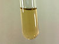

fluorine

Definition: Fluorine is a chemical element with the symbol F and atomic number 9. It is the lightest halogen and exists at standard conditions as a highly toxic, pale yellow diatomic gas. As the most electronegative reactive element, it is extremely reactive, as it reacts with all other elements except for the light inert gases.
Source: Wikipedia
Wikipedia Page
Wikidata Page